Basic Info
track_id: Unique track ID.
track_name, artists, album_name: Song details.
track_genre: Music genre.
Machine Learning / Data Science Final Project
We aim to predict the popularity of a song based on its acoustic features and artist-related information from Spotify song data.
Project Overview
Our goal is to develop a predictive model that analyzes a song's multiple features to predict its popularity.
The current music industry is highly competitive and saturated, with more than 100,000 new tracks delivered to streaming services each day. Statistical analysis is essential for artists and stakeholders to quantify a song's potential success before capital is deployed.
Dataset
track_id: Unique track ID.
track_name, artists, album_name: Song details.
track_genre: Music genre.
danceability: Suitability for dancing.
energy: Intensity, from fast and loud to calm.
valence: Mood, from happy to sad.
speechiness: Spoken words presence.
instrumentalness: Likelihood of no vocals.
acousticness: Likelihood of acoustic sound.
liveness: Likelihood of live performance.
Most audio feature values are measured on a 0-1 scale.
popularity: Score from 0-100 based on plays and recency.
duration_ms: Track length in milliseconds.
explicit: Whether the track contains explicit lyrics, recorded as true or false.
key: Pitch class from 0-11, with -1 for unknown.
mode: Major is 1 and minor is 0.
tempo: Speed of the track in BPM.
loudness: Overall volume in dB.
time_signature: Beats per measure, from 3-7.
Filtering
The artist popularity mean baseline showed that artist-level popularity is an important signal for prediction.
Songs with popularity below 10 had large prediction errors, so we removed those low-popularity records.
To make artist averages more reliable, we removed artists with 10 or fewer songs from the dataset.
Since artist name and track genre are important for popularity prediction, we created three dataset versions to compare how different feature groups affect model performance. Track genre will be discussed in more detail in a later section.
Models
We use two baseline models: one predicts popularity using the average popularity of all songs, and the other predicts popularity using each artist's average song popularity.
Linear model used to estimate popularity from the numerical features.
Sequential tree ensemble that adds new regression trees to correct the errors left by earlier trees.
Ensemble of decision tree regressors trained on different data samples, with their predictions averaged to improve stability.
Layer-based model that learns nonlinear patterns across the input features through connected dense layers.
Results
We evaluate four models on three dataset versions. Each result card will contain its own prediction figure and the three performance metrics: MAE, RMSE, and R².
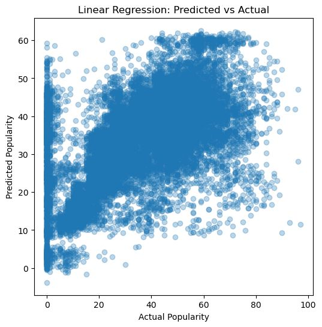
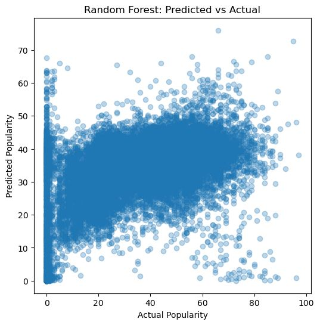
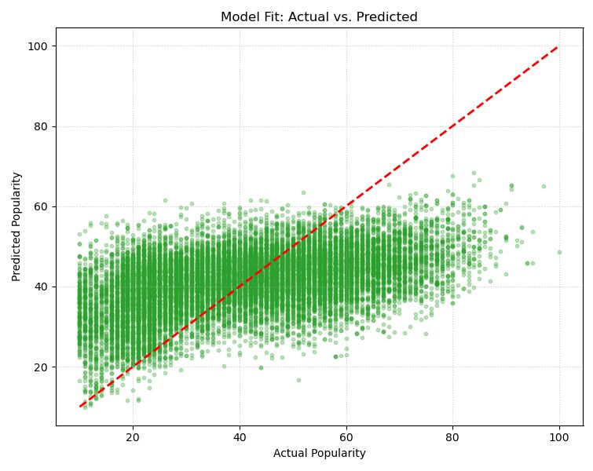
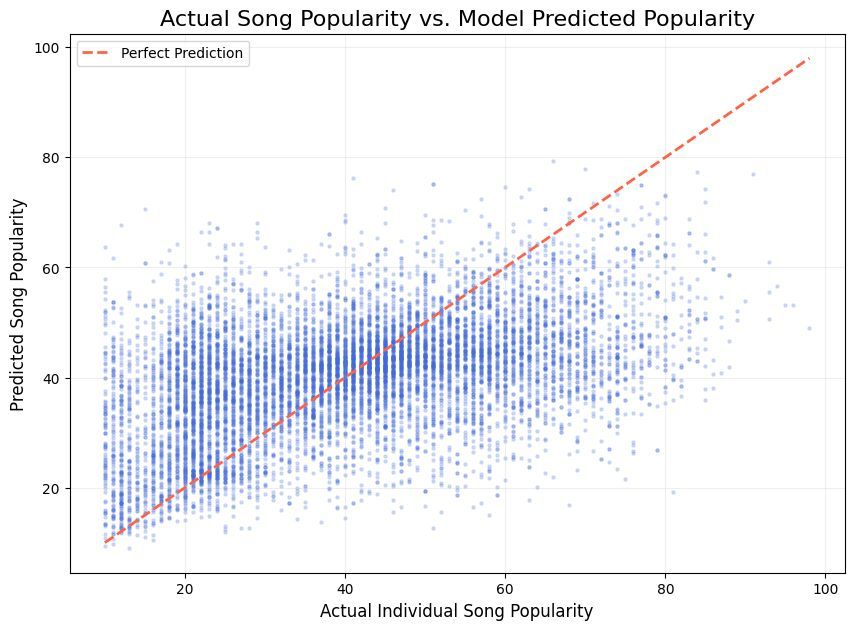
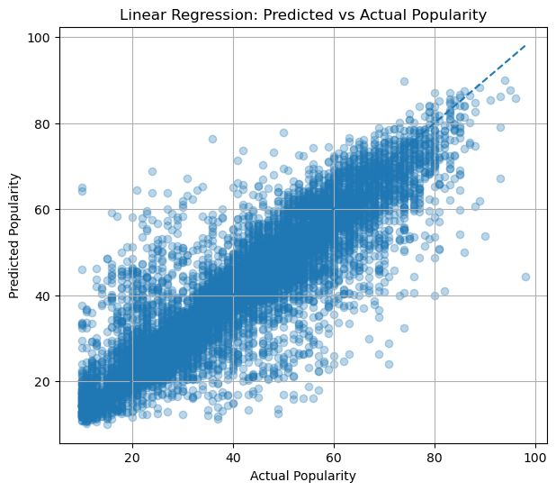
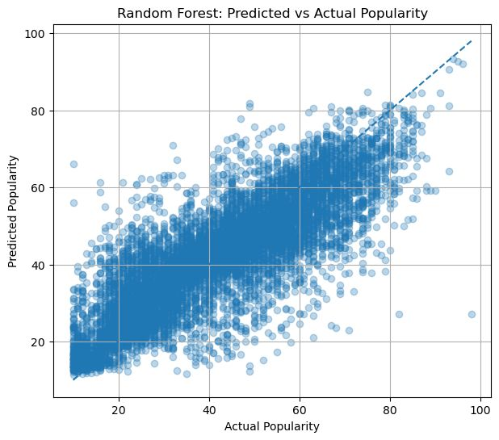
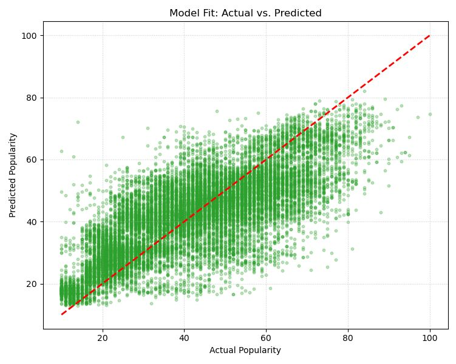
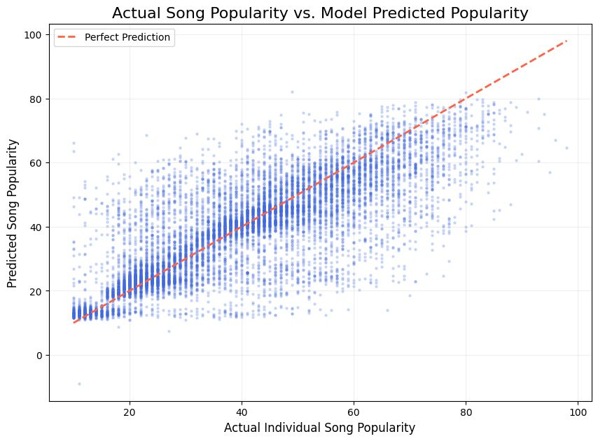
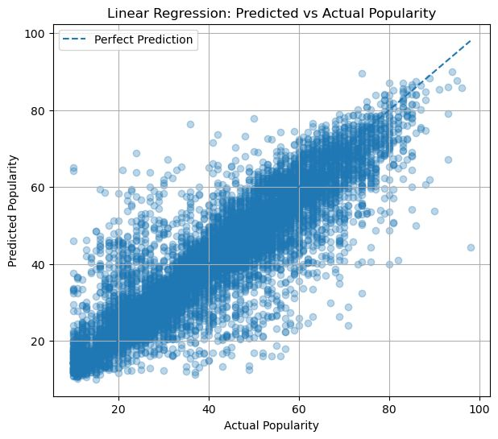
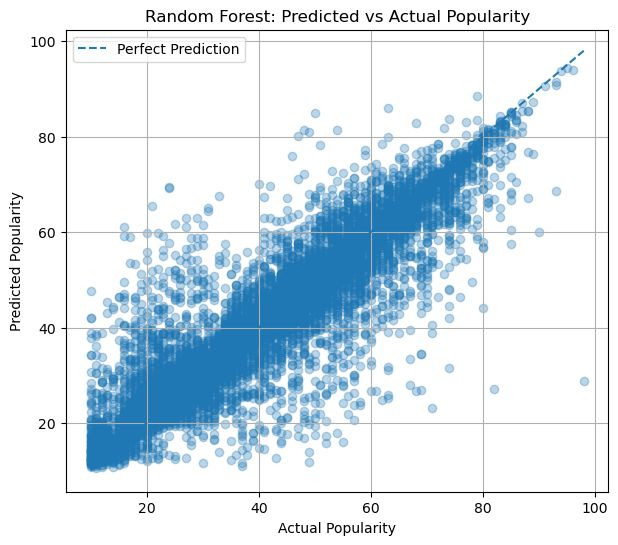
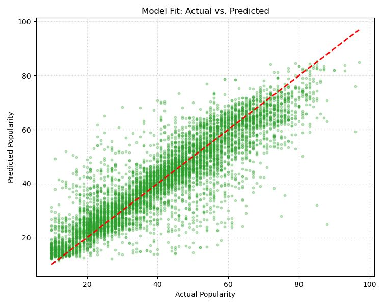
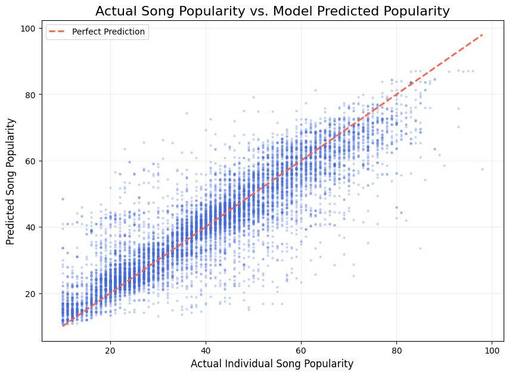
Feature Importance
Permutation feature importance measures how much a model relies on each feature by randomly shuffling one feature at a time and observing how much model performance drops. A larger drop means the feature carries more useful predictive information. We apply this method across the three dataset versions to compare how numerical audio features, track genre, and artist information contribute to Spotify popularity prediction.
Numerical Features
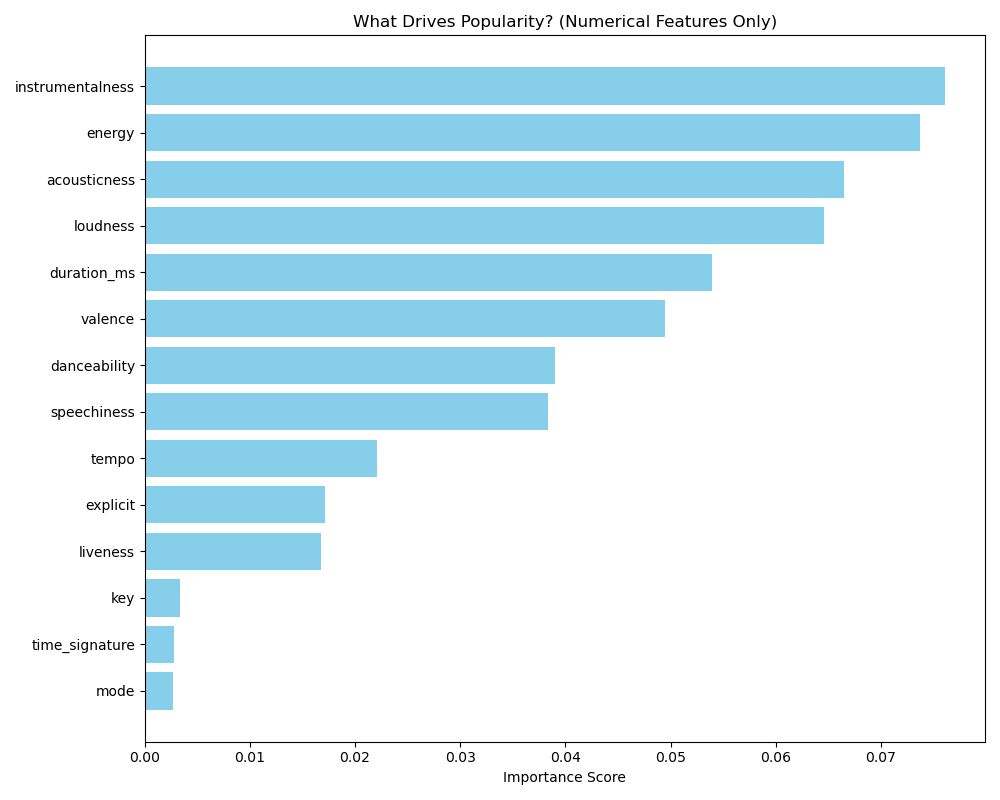
Numerical Features + Track Genre
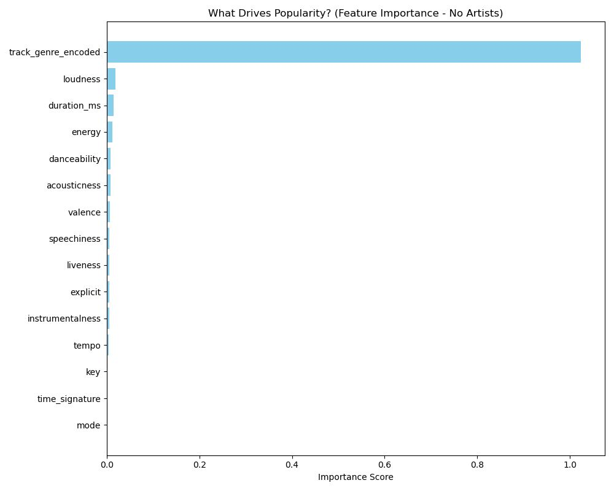
Numerical Features + Track Genre + Artist
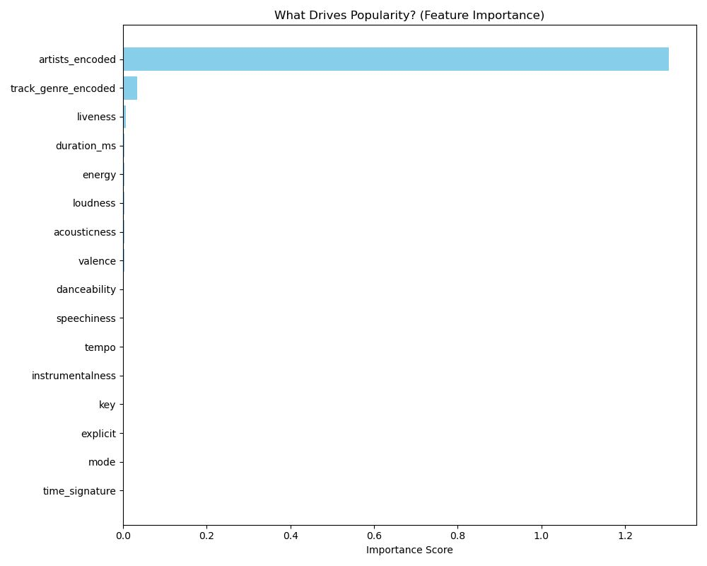
Overall, artist information is the most important predictor of Spotify popularity, with track genre as the second strongest signal. The remaining audio and numerical features still contribute to the model, but their influence is secondary compared with artist and genre effects.
Interpretation & Insight
Artist is the strongest signal in our model. One possible explanation is that the artist variable may indirectly capture factors not included in our dataset, such as existing audience size, public recognition, playlist exposure, or fan loyalty.
Track genre is the next most important feature. This may be because genre acts as a proxy for broader listening contexts, such as audience segments, playlist categories, or demand patterns that are not directly measured in our dataset.
Most other features have very small importance. Audio properties like tempo, key, valence, or danceability may describe how a song sounds, but they do not strongly explain popularity by themselves.
The result implies that Spotify popularity is less about one universal musical formula and more about cultural position: who released the song and which genre ecosystem it belongs to.
For artists and stakeholders, improving popularity prediction requires features that represent audience reach and market placement, not only acoustic measurements.
The model is learning that popularity behaves like a social and platform-driven outcome. Musical attributes matter, but their effect is much smaller than artist and genre identity.
Summary
This project began with a simple question: can Spotify song popularity be predicted from the information available about a track? Our results suggest that the answer is yes, but not mainly for the reason people might expect. Popularity is not explained strongly by isolated acoustic qualities such as tempo, key, valence, or danceability. Instead, the model points to a broader music-market reality: songs become popular inside social, cultural, and platform ecosystems.
By filtering unreliable low-popularity records, comparing three dataset versions, and evaluating multiple model families, we found that adding categorical context changes the problem substantially. Artist identity carries the strongest signal, track genre adds meaningful context, and the remaining numerical features contribute far less. The gap between artist and genre is also meaningful: many artists consistently operate within the same genre, so the artist variable can absorb part of the genre signal along with fan base, promotion history, and name recognition. In other words, Spotify popularity is not only a property of the song's sound; it is also a reflection of who released it, which audience it reaches, and where it sits in the streaming landscape.
Artist and genre explain more than most standalone audio descriptors.
Moving beyond numerical features gives the model more realistic market signals.
New artists cannot rely on name recognition yet, so genre positioning and early exposure become the signals they can actively build.
From Spotify's perspective, artist and genre can help group similar listening patterns, making them useful signals when recommending related songs.
Credits